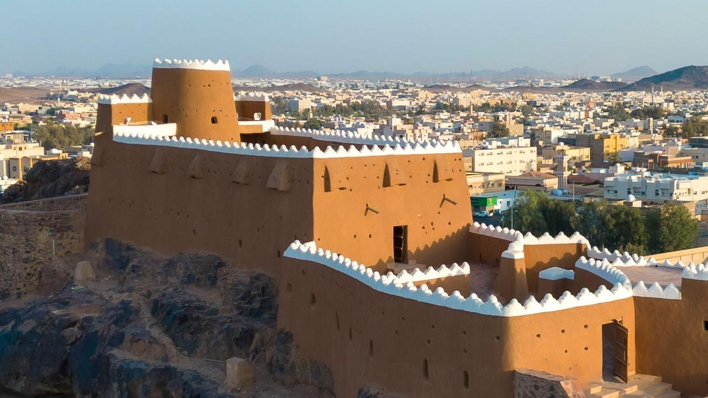
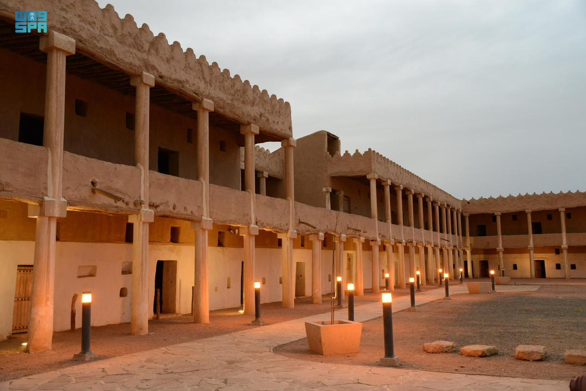

Aaref Castle is an ancient castle located in the Hail region in the north of the Kingdom of Saudi Arabia Aairif Castle is located in the heart of Hail, on top of a mountain overlooking the city The castle is believed to have been built in 1840 It is considered one of Hail's heritage landmarks

The ruins of Rattan and Al-Manjur
Two archaeological sites located in the south of the city of Hail, about 320 km from Hail To the west of the village of Al-Shuwaymis, affiliated with the city of Al-Hait, about 35 km from it The two sites are among the new discoveries in the Antiquities Square in Hail This is what international experts concluded after a great effort of analytical studies From the drawings discovered in Al-Shuwaymis Which may date back to 14,000 years ago

zulma cave
From the ancient legends in Hail, Zalma Cave 300 years ago. The cave was a trap for travelers, used by Zalmaa and her daughter. To kill and devour travelers, and it was said that she was the protégé of wolves, and it was said that she was rabid The place has now become one of Hail's landmarks and is visited by tourists

Castle al-Qishla
Al-Qashla Palace is a historical palace built during the reign of King Abdulaziz Al Saud in the year 1360 AH in the city of Hail. The construction of the palace lasted a year and a half Then a mosque, a prison building, and some other annexes were added to it, the construction of which was completed in 1362 AH .
